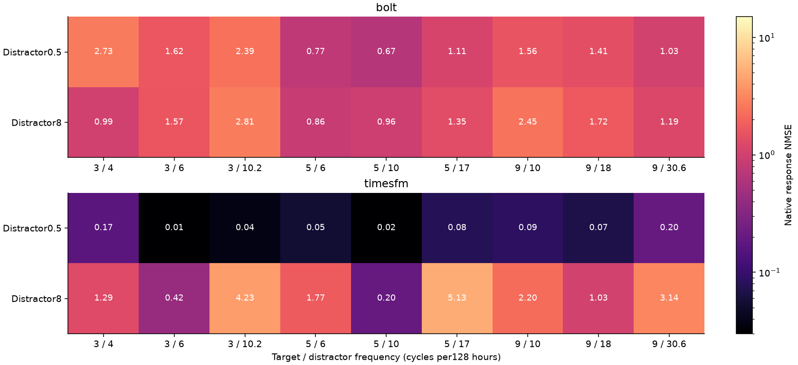
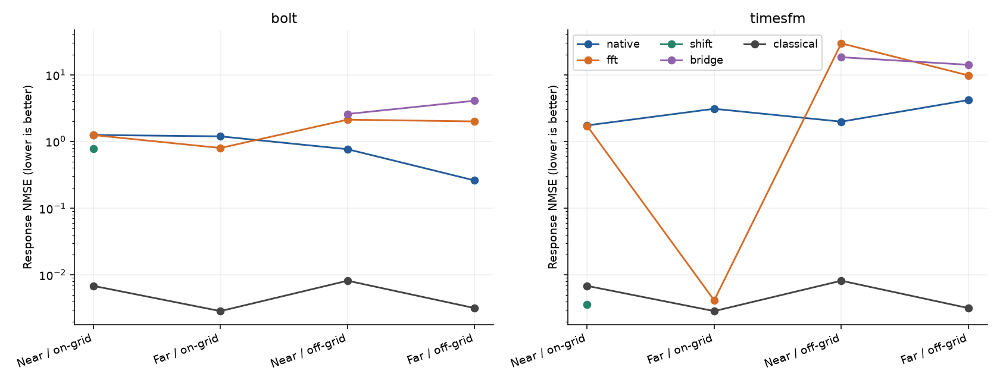
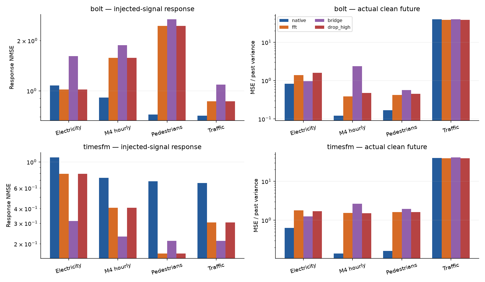
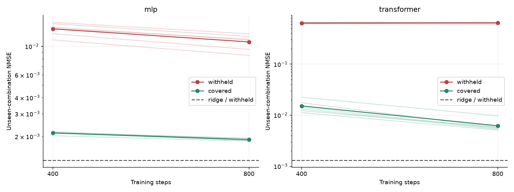

Coherence follow-up · Section49SECTION 49 · GROUNDED FOLLOW-UP
When component fidelity and forecast quality disagree
Parked experiments 1,7,8, followed by fresh-source replication and competing-explanation controls. Two pretrained models; 64 synthetic seeds; 128 real sources across four datasets.
Native replication: 18.2 CPU minutes · one thread/model · no GPU · offline checkpoints
Measured findings
TimesFM, strong far distractor: native response NMSE 3.079, Fourier split 0.004152 on-grid; 4.166 and 9.74 off-grid. The off-grid comparison tests whether the easy spectral separation generalizes.
Controlled transformer training: unseen-combination error at 800 steps is 0.6398 with combinations withheld and 0.006212 with coverage. All six fresh corpora favor coverage; component exposure counts and neural training budgets match.
The pedestrian response/forecast tradeoff passes the corrected primary tests. Electricity response improvement does not. Diagnostic selectors show no consistent incremental benefit over input-only selectors in this fixed screen.
Electricity TEST sources: TimesFM native-minus-FFT response error 0.3055; FFT-minus-native clean forecast error 1.168. Positive values mean better component response but worse actual forecasting, respectively. Full uncertainty and corrected tests appear below.
Pedestrians TEST sources: TimesFM native-minus-FFT response error 0.5184; FFT-minus-native clean forecast error 1.463. Positive values mean better component response but worse actual forecasting, respectively. Full uncertainty and corrected tests appear below.
How to read the evidence
Response NMSE measures whether adding a known oscillation produces the appropriate forecast change. Clean-future MSE measures actual prediction quality, in units of past variance. They answer different questions. A model can respond faithfully to an injected component and still predict the unmodified series poorly. Conversely, the off-grid controls show that decomposition itself can introduce a major failure.
Primary evidence is a fixed family of 12 source-level directional tests with Holm correction and a mean-effect gate of 0.1. Confidence intervals bootstrap source means, conditional on the sampled datasets. Mechanistic comparisons and model selection remain exploratory. Sources in the same dataset may be correlated; these tests do not establish broad population independence.
The parked interference map

ID 1 pilot: eight fresh seeds, three target frequencies, nearby / harmonic / distant distractors, two amplitudes. This is a descriptive screen, not a corrected significance map. The replication below concentrates on target 5 and 5.35 and tests new off-grid cases; it does not confirm every pilot cell.
Interference, separation and identifiable signals

High distractor amplitude 8, target amplitude 0.5;64 fresh seeds, averaging paired positive/negative additions within seed. Log scale. Original FFT bands can separate far tones but group nearby tones together. Shift and bridge are shown only where actually evaluated. Classical frequencies are fitted from observed histories.
Response error splits exactly into gain error and distortion orthogonal to the expected target waveform. The latter can include phase error and changes in other frequencies; it does not by itself identify a hidden mechanism. Mean gain alone can conceal errors that cancel across signs or seeds.
Exploratory paired contrasts: positive means the first method has higher response error. Normalizer/history rows use the declared 16-seed subset; shifted splitting uses 64. Intervals are conditional 95% source bootstraps, without multiplicity correction.
Real data: response accuracy is not forecast accuracy

16 untouched TEST sources per dataset; logarithmic vertical axes. Left: known bin 5 oscillation, averaged over signs; right: unmodified real future. All series use past-only standardization. The full data includes an off-grid 24-hour addition and endpoint-bridge controls in the downloadable tables.
All 12 primary tests retained, including null or opposite results. The p-values test a directional majority, not a population mean. “Passes” additionally requires the empirical mean effect to exceed 0.1.
Coverage can produce a persistent composition failure

Six independent training corpora with paired initializations. Each arm sees exactly the same number of examples and component exposures; pair co-occurrence differs. Thin lines are corpora, thick lines their means. All checkpoints are retained. The linear ridge baseline indicates that the task is solvable without seeing the withheld pairs.
A retrospective ridge control with the neural models' same past-only normalization gets held-out error 0.0014423 without coverage and 0.00144183 with coverage. Normalization alone therefore does not make this task unsolvable for a linear predictor.
This is a controlled finding about the small trained models. It is not evidence that any particular TSFM omitted these combinations during pretraining.
Where does the real forecast penalty come from?
Exact identity: MSE(adapter) − MSE(native) = 2 mean(native error × forecast change) + mean(forecast change²). These are observed total-future errors. The identity does not provide ground truth for individual real-data components.
Does the diagnostic help choose a forecaster?
First table: TEST clean-future MSE; lower is better. Second: paired input-only minus diagnostic loss; positive favors diagnostics, with conditional exploratory 95% intervals. Each selector trains only on 64 FIT sources (16/domain), then chooses on 64 TEST sources. Fixed ridge and RBF versions compare input-only descriptors against added past-only perturbation diagnostics. No method or hyperparameter is selected using TEST outcomes. Hindcast selects the model that best predicted the last 32 observed points from an earlier 128-point context. Full paired differences and oracle regret are in analysis.json.
Traffic has a heavy-tailed error distribution: native TimesFM mean 39.5071, median 0.266213. Source monash_traffic:T 000617 contributes 92.83% of its total TEST loss. It is retained under the frozen membership rule; domains are reported separately rather than pooled.
Competing explanations and what the controls establish
“Coherence” here has several observable aspects: sensitivity to a small component, compositional behavior, stability under normalization/history changes, and actual forecast accuracy. None alone is a universal model ranking. Spectral separation can mechanically remove distractor influence without establishing correct interpretation of the original mixture.
Scope, provenance and reproducibility
Real sources are disjoint from earlier pilots, but overlap with model pretraining is unknown. They must not be described as unseen-pretraining data. One forecast origin per source; no window-level pseudoreplication. Real component futures are unknown: the experiment scores known injected changes and the observed total future, not invented component ground truth.
Both native workers passed exact repeat and normalizer self-identity checks. Independent arithmetic audits replay saved losses, responses, primary tests and selector losses. Deliberate regression plants test the implementation guards. Resource caps are recorded in protocol.json.
Complete analysis · Every measurement · Frozen protocol · Independent audit · Training results · Reproduce